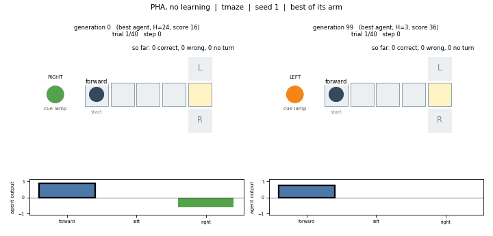
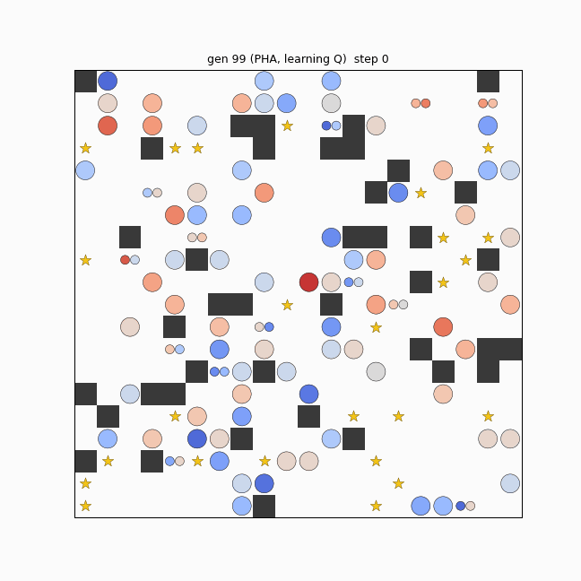
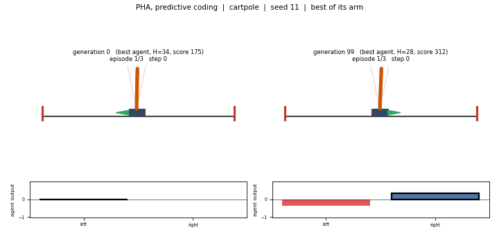
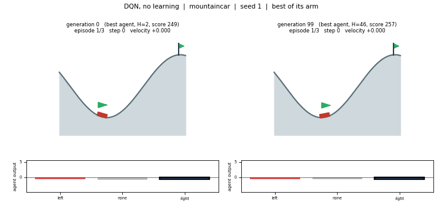

Tests memory
T-maze
Cue visible only at step 0. Corridor length 4. Fitness over 40 trials (max 40). A feedforward agent cannot beat chance.
PHA no-learning 2.6 ± 0.8 · all DQN arms ≈ 0 · learning arms hurt PHA (abstention).

EitOR
Quality-diversity search builds PHA and DQN agents on a shared grid, then asks whether a self-bootstrapped Q signal can stand in for extrinsic reward.
The idea
A generation walks the same wraparound grid at once. Fitness is net stars under competition. Inside each lifetime the weights may stay fixed, predict the next observation, or update a Q head—with no reward, with the true reward, or with a random projection of the observation.

Fill is spectral radius (blue contracts, red expands). The number is hidden-neuron count. Gold stars are contested; dark cells are obstacles. Shown: PHA with self-bootstrapped Q, seed 42, generation 99.
The method
CMA-ME searches a 60-dimensional CPPN genome. ES-HyperNEAT grows the substrate. MAP-Elites keeps diversity across dynamics and size. Optional within-lifetime learning rewrites weights without moving the archive axis.
Four emitters sample CPPN genomes (λ = 20) in continuous space.
A CPPN queries substrate coordinates to place weights and a [0,1] hidden budget.
Grid episode or a single-agent task; optional PC / Q updates inside the lifetime.
Archive by spectral radius × hidden size so capacity cannot erase diversity.
Same substrate search, different dynamics.
Only the target changes; the outer evolutionary loop stays fixed.
Grid world · 10 seeds
Mean fitness over the last 10 generations. Architecture barely matters without learning. The random-reward control recovers about half of the self-bootstrapped gain; the zero-target control sits below no learning. Extrinsic reward fails to act as an upper bound under this within-lifetime learner.
| Variation | PHA | DQN |
|---|---|---|
| No learning | 8.1 ± 1.2 | 8.2 ± 0.7 |
| Predictive coding | 10.2 ± 1.0 | — |
| Self-bootstrapped Q | 11.3 ± 0.9best PHA | 12.0 ± 0.8best DQN |
| Extrinsic reward | 8.1 ± 1.1 | 9.8 ± 0.8 |
| Random reward | 9.2 ± 0.6 | 9.5 ± 0.8 |
| Zero target | — | 7.7 ± 0.7 |

Benchmarks · 5 seeds
Three tasks that the shared grid cannot ask: memory, recurrence from partial observations, and sparse reward. The self-bootstrapped advantage from the grid does not transfer under these settings.
Tests memory
Cue visible only at step 0. Corridor length 4. Fitness over 40 trials (max 40). A feedforward agent cannot beat chance.
PHA no-learning 2.6 ± 0.8 · all DQN arms ≈ 0 · learning arms hurt PHA (abstention).

Tests recurrence
Velocities hidden; only position and angle shown. Fitness is steps over 3 episodes (max 600).
PHA ≈ 140–149 · DQN ≈ 121–123 · predictive coding alone helps slightly (149).

Tests sparse reward
Reward −1 per step until the goal. Fitness is steps saved when reached (else 0). Evolution alone already finds solvers.
DQN no-learning 178 ± 5.5 · every learning rule hurts · PHA lags (~90–122).


Reproduce
Header-only C++17 with Eigen. Logs name themselves from the run tag; visualize.py ranks runs and draws the best and worst.
# build clang++ -std=c++17 -O2 -I/opt/homebrew/include/eigen3 main.cpp -o eitor # grid baselines + three benchmarks ./run_sweep.sh grid ./run_sweep.sh bench # overviews, best/worst grids, benchmark sheets python3 visualize.py --no-render python3 visualize.py --anim --jobs 8